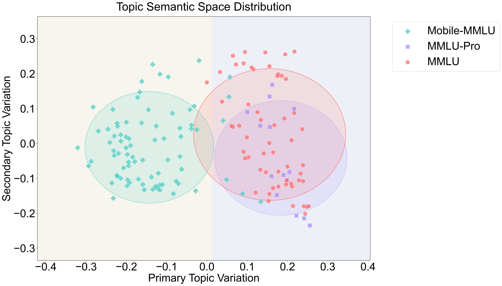
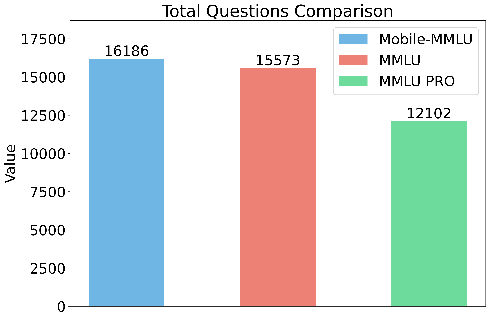
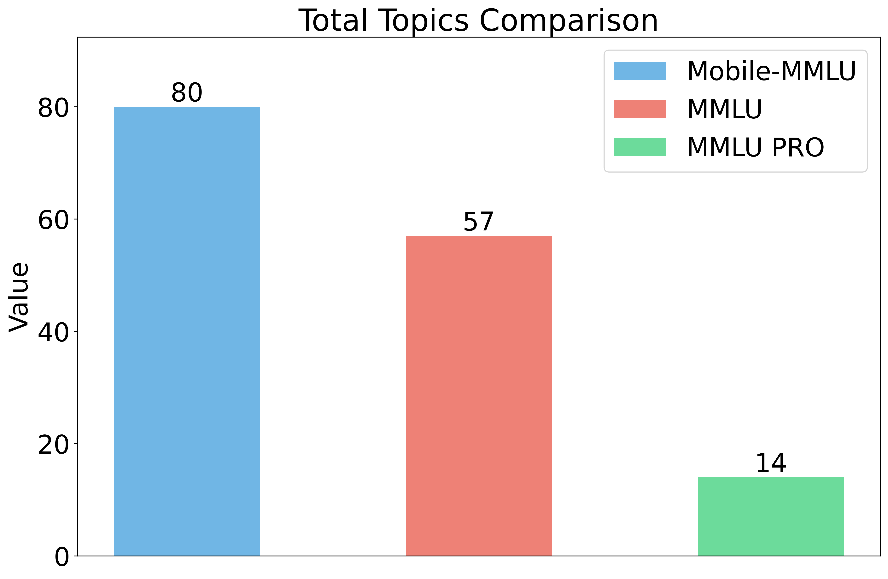
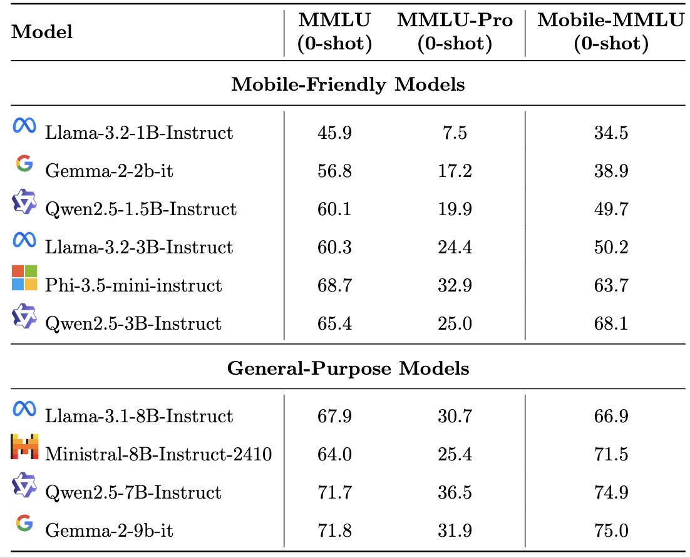
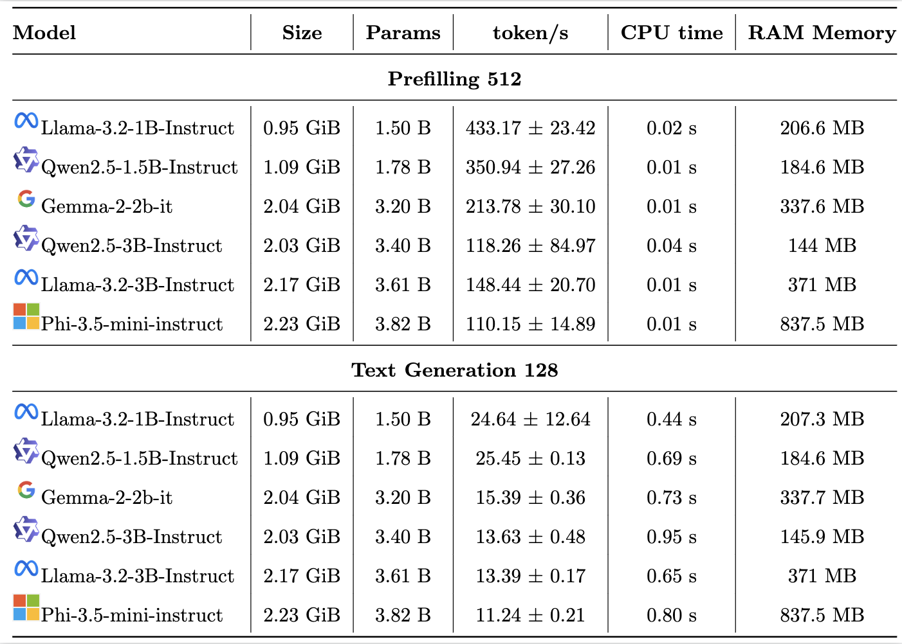

Welcome to Mobile-MMLU
Your gateway to evaluating mobile-compatible Large Language Models (LLMs) across 80 diverse fields such as Education, Healthcare, and Technology. Mobile-MMLU is redefining mobile intelligence benchmark for a smarter future.
Explore Mobile-MMLU BenchmarkMotivation
Why Apple Intelligence and Mobile Intelligence Are Important for LLMs on Mobile Devices?
-
On-Device Efficiency:
Mobile devices, such as smartphones, tablets, and wearables, have limited computational resources compared to high-end servers. Apple Intelligence and other mobile-focused AI frameworks prioritize optimization techniques to run small-scale large language models (LLMs) directly and efficiently on these constrained environments. Techniques like model compression, quantization, and efficient architectures (e.g., linear complexity models) are crucial for enabling LLMs to perform effectively on mobile devices. However, these models have limited capabilities.
-
Personalization and Privacy:
On-device LLMs can process user data locally without sending sensitive information to cloud servers. This ensures better privacy and security, a feature that aligns with Apple’s emphasis on user-centric privacy through its Apple Intelligence ecosystem. Mobile Intelligence allows models to adapt to user preferences, habits, and behaviors in real-time while safeguarding data.
-
Low Latency:
Running LLMs directly on mobile devices eliminates the need for constant internet connectivity and reduces reliance on cloud infrastructure. This enables real-time responses and faster performance, which are critical for applications such as voice assistants, augmented reality, and on-device content generation.
-
Accessibility and Ubiquity:
Mobile devices are used globally and form a significant part of everyday life. Integrating LLMs into mobile platforms broadens their accessibility, enabling users in low-bandwidth regions or offline environments to experience the benefits of AI seamlessly. Apple Intelligence exemplifies how optimized LLMs can democratize advanced capabilities for mainstream users.
Why a Mobile LLM Benchmark Is Necessary to Identify Good Mobile LLMs?
-
Performance Evaluation in Realistic Settings:
A dedicated mobile LLM benchmark is essential to evaluate models under the real-world limitations of mobile devices, such as limited memory, energy constraints, and computational power. Traditional benchmarks often target cloud-based models without accounting for these restrictions.
-
Model Comparability:
A standard benchmark allows researchers and developers to compare different LLM architectures, optimizations, and compression techniques fairly. Without such benchmarks, it is challenging to assess which models are suitable for mobile deployment.
-
Identifying Use-Specific Solutions:
Mobile devices are integral to daily life, and integrating LLMs allows for personalized, real-time experiences such as smarter virtual assistants, contextual recommendations, and language understanding for apps. Apple Intelligence, for example, enables LLMs to adapt to user behaviors, provide tailored responses, and improve applications like Siri, search, and messaging.
-
Driving Innovation:
A benchmark provides clear goals for researchers and companies to innovate further. By setting performance, efficiency, and latency baselines, it encourages the development of new algorithms, architectures, and optimization strategies tailored to mobile platforms.
-
Accuracy vs. Efficiency Trade-off:
Mobile LLMs require a balance between accuracy and resource efficiency. Benchmarks can identify the best-performing models that achieve high accuracy while maintaining fast inference times and low energy consumption on mobile hardware.
-
Improving End-User Experience:
Ultimately, a mobile LLM benchmark helps identify models that deliver the best user experience on mobile devices. This includes fluid interactions, responsiveness, and minimal battery drain, making LLM-powered features practical and usable on a large scale.
Benchmark Overview
Our dataset encompasses 80 fields, featuring a total of 16,186 questions, including scenario-based questions. Below is a subset of 6 fields showcasing the diversity of question types.
Home maintenance
Question:After installing a new dishwasher, I find that dishes aren't cleaning properly, and the appliance occasionally leaks. I've confirmed proper installation. What other issues should I consider, and how can I troubleshoot effectively?
Cooking and Recipes
Original
Question: How do I plan meals for someone with gluten intolerance?
First Aid
Question:Someone is bleeding profusely from their leg after an accident; I applied pressure but it's not stopping; should I use a tourniquet, and how?
Basic life skills
Question:What is the best way to store spices?
Nutrition and Diet
Question:How can I reduce my intake of processed foods?
Culture
Question:What is the importance of the Maori facial tattoo, known as Ta Moko?
Mental Health
Question:How can I manage anticipatory anxiety?
(1) Participating in cognitive behavioral therapy and utilizing visualization techniques are useful strategies to manage anticipatory anxiety, offering long-term benefits.
(2) Engaging in deep breathing exercises and regular yoga sessions can effectively manage anticipatory anxiety by promoting a sense of calm.
(3) Developing a routine of physical exercise and adopting a balanced diet can help manage anticipatory anxiety by improving overall mental well-being.
(4) Practicing mindfulness and relaxation techniques can help manage anticipatory anxiety.
Which of the statements given above are correct?
Travel planning
Question:If traveling with a large service dog, what logistics must I consider regarding airlines, accommodations, and public transport to ensure a smooth trip?
(1) When traveling with a large companion animal, consider the following logistics: investigate the airline's rules about companion animal travel, ensuring they align with the needs of your animal, check that your accommodations are not just pet-friendly but specifically cater to companion animals, and look into whether public transport services in your destination allow companion animals, and under what specific conditions.
(2) When traveling with a large service dog, consider the following logistics:
(3) When traveling with a large emotional support animal, consider the following logistics: check the specific airline policies regarding animal size restrictions, ensure accommodations are pet-friendly and can handle the specific needs of an emotional support animal, and verify that public transport options in your destination accept emotional support animals without additional fees or documentation.
(4) When traveling with a large therapy dog, consider the following logistics: review each airline's guidelines for accommodating therapy dogs, make sure your accommodations can provide adequate space and facilities for a therapy dog, and confirm that public transport systems in the area have provisions in place for traveling with therapy dogs, particularly concerning space and accessibility.
Which of the statements given above are correct?
Digital Detox
Question:How can I manage digital detox when needed for work purposes?
(1) Set specific times for checking work-related messages and emails to balance work requirements with digital detox.
(2) Establish precise durations for reviewing work-related communications and emails to harmonize work expectations with attempts at a digital detox.
(3) Schedule particular periods to engage with work-related correspondences and emails, balancing occupational commitments with efforts towards a digital detox.
(4) Allocate designated intervals for responding to work-related notifications and emails, ensuring you address professional obligations while attempting a digital detox.
Which of the statements given above are correct?
Benchmark Statistics
Explore our comprehensive dataset covering 80 fields, from technical disciplines to creative domains. Gain insight into the diversity and depth of the data that drives our benchmark.
-
Our dataset encompasses 80 fields, featuring a total of 16,186 questions, carefully curated to evaluate mobile-compatible language models. Each field includes multiple-choice questions designed to test both fundamental knowledge and real-world applications. Below is a comprehensive visualization showing the distribution of questions across all fields, demonstrating the breadth and depth of our benchmark's coverage.
The visualization uses a three-layer sunburst chart where the innermost ring represents main categories (like "Academic & Learning", "Business & Career"), the middle ring shows subcategories (such as "Health & Wellness" including Mental Health and Physical Fitness), and the outermost ring displays all 80 fields with their question distribution. Hover over any segment to see detailed statistics, with segment sizes proportional to question counts. The consistent color coding across layers helps track relationships between categories and their subfields, revealing the systematic coverage of mobile-centric knowledge domains.
-
This visualization demonstrates the topic distribution across MMLU, Mobile-MMLU, and MMLU-Pro benchmarks. From the scatter plot, we can observe that Mobile-MMLU topics occupy a distinct semantic space compared to the topics of MMLU and MMLU-Pro benchmark. This clear separation in the topic distribution highlights Mobile-MMLU's unique focus on practical, mobile-relevant scenarios, complementing existing benchmarks rather than overlapping with them. The distinct clustering pattern validates Mobile-MMLU's contribution as a specialized benchmark tailored for evaluating mobile-oriented language models.
 -
This comparison highlights the differences between the basic statistics of Mobile-MMLU from MMLU and MMLU-Pro benchmark. Our benchmark features a greater number of questions, topics and and are more diverse, offering broader coverage and depth.
Total Questions DistributionTotal Topics Distribution -
The figures below provide a comprehensive visualization of the dataset characteristics. For Mobile-MMLU and MMLU, we showcase the top 40 categories by both question count and word distribution, highlighting the depth and breadth of coverage in each domain. For MMLU-Pro, which focuses on specialized professional knowledge, we present the top 14 categories. These distributions reveal distinct patterns: Mobile-MMLU demonstrates a balanced distribution across practical, everyday topics, MMLU shows concentration in academic and professional fields, while MMLU-Pro exhibits focused coverage of specialized professional domains.

Mobile MMLU Questions Distribution 
Mobile MMLU Word Distribution 
MMLU Questions Distribution 
MMLU Word Distribution 
MMLU Pro Questions Distribution 
MMLU Pro Word Distribution -
The following tables present a comprehensive statistical breakdown comparing Mobile-MMLU with MMLU and MMLU-Pro benchmarks. Each dataset table showcases its unique hierarchical structure - from broad categories to specific topics - along with detailed question counts. Mobile-MMLU offers extensive coverage with 80 fields and 16,186 questions, emphasizing practical, everyday knowledge areas. In contrast, MMLU contains 57 subjects with 15,573 questions focusing on academic disciplines, while MMLU-Pro features 14 specialized professional fields with 12,102 questions. This side-by-side comparison highlights how Mobile-MMLU complements existing benchmarks by introducing new categories specifically relevant to mobile use cases, while maintaining comprehensive coverage in terms of both breadth and depth.
Mobile-MMLUTotal Questions: 16,186Daily Life SkillsBasic Life Skills 209Time Management 211Conflict Resolution 152Event Planning 201Food and CookingCooking And Recipes 274Food Safety 219Nutrition And Diet 151Digital LiteracyDigital Literacy 198Technical Help 254Mobile Customization 230Social MediaSocial Media 217Digital Detox 196Privacy and SecurityCybersecurity 208Online Privacy 219Health and WellnessMental Health 130Physical Fitness 190Medical And Health Knowledge 183Ergonomics 204Personal GrowthCreativity 210Emotional Intelligence 133Personal Branding 186Career Development 166Home and LivingHome Safety 189Pet Care 208Waste Management 207Home Maintenance 261CommunicationCommunication Skills 134Social Etiquette 200Public Speaking 158EducationEducation Techniques 146Reading And Literature 248Writing Skills 203Linguistics 223Personal BusinessPersonal Finance 223E Commerce 186Shopping 241Accounting 205Business StudiesProject Management 176Human Resources 144Business Management 167Marketing And Sales Strarigies 162EntertainmentEntertainment 207Movie And Tv Show 230Podcasting 211Hobbies 208Photography Basics 214Everyday SafetyFirst Aid 221Outdoor Survival Skills 277Automotive Care 275FamilyParenting 144Relationships 173Teens And Youth 161LifestyleFashion And Style 200Travel Planning 214Sports 188Gardening And Horticulture 212EnvironmentalSustainable Living 178LegalLegal Rights 219Law 206EthicsEthical Living 171Ethics 172Arts and DesignArt Techniques And Architecture 175Interior Design 200WeatherWeather Forecasting 205Culture and ReligionCultural Awareness 243Religious Studies 215Holidays And Traditions 236Critical ThinkingFormal Logic 210Logical Fallacies 293Basic MathematicsElementary Mathematics 254High School Mathematics 200Basic Statistics 219Basic SciencesConceptual Physics 194Science Fundamentals 191Social SciencesSocial Sciences 207Political Systems 193World History 206Geography 211MiscellaneousGlobal Facts 228News And Information 203MMLUTotal Questions: 15,573Basic MathematicsElementary Mathematics 419High School Mathematics 299High School Statistics 239Basic SciencesHigh School Physics 168Conceptual Physics 261High School Chemistry 225High School Biology 342Advanced MathematicsAbstract Algebra 111College Mathematics 111Advanced SciencesCollege Physics 113College Chemistry 108Astronomy 168College Biology 160Medical Genetics 111Virology 184Computer ScienceCollege Computer Science 111High School Computer Science 109Machine Learning 123Security and PrivacyComputer Security 111Security Studies 272EngineeringElectrical Engineering 161Food and CookingNutrition 339Religion and CultureWorld Religions 190Medical SciencesClinical Knowledge 294College Medicine 195Professional Medicine 303Human Aging 246Human Sexuality 143Anatomy 149Personal BusinessManagement 114Marketing 259Business StudiesProfessional Accounting 313Econometrics 126Business Ethics 111High School Macroeconomics 433High School Microeconomics 264MoralityMoral Disputes 384Moral Scenarios 995Professional LawProfessional Law 1704International Law 134Jurisprudence 119PsychologyHigh School Psychology 605Professional Psychology 681Social SciencesSociology 223Philosophy 345High School Geography 220High School Government And Politics 214Public Relations 122Us Foreign Policy 111HistoryHigh School European History 183High School Us History 226High School World History 263Prehistory 359Critical ThinkingFormal Logic 140Logical Fallacies 181miscellaneousGlobal Facts 110Miscellaneous 869MMLU-ProTotal Questions: 12,102Math 1,356Physics 1,304Chemistry 1,137Law 1,106Engineering 974Other 929Economics 849Health 823Psychology 803Business 794Biology 722Philosophy 504Computer Science 415History 386
1. Dataset Coverage and Structure
2. Topic Distribution Analysis
3. Comparative Dataset Analysis
4. Dataset Categories and Question Distribution
Our Methodology
Our methodology reflects a rigorous and systematic approach, designed to ensure not only quality but also practicality for mobile-based applications. By leveraging detailed planning and execution strategies, we aim to provide benchmark that resonate with real-world use cases. Every step has been designed and reviewed to uphold the highest standards of relevance, reliability, and scalability.
.png)
Our methodology is a detailed, multi-step process designed to ensure comprehensive and reliable benchmarks:
- Field Selection: We began by conducting an in-depth search to identify fields that people frequently need or use in daily life, work, shopping, gaming, travel, or other scenarios. These fields were designed to align with mobile searches and user queries. These fields were gathered from diverse sources including Wikipedia, various websites, and large language models to ensure inclusivity and relevance.
- Question Structuring and Human Annotation:
- The questions included standard questions to evaluate general knowledge and understanding, and challenging scenario-based questions crafted to simulate real-world situations and test critical thinking skills.
- The questions underwent multiple rounds of human annotation. This included generating the ground truth answers first and then creating multiple-choice questions (MCQs) based on the ground truth. The MCQs were crafted with the following principles:
- Options were highly similar to the ground truth, differing only in specific keywords or subtle details to make them incorrect.
- On average, MCQs were longer than the ground truth answers to test model precision.
- Some questions included multiple correct answers for added complexity.
- Quality Assurance: The generated questions were thoroughly reviewed for similarity and uniqueness. Any redundant or overly similar questions were removed. Additionally, each batch of questions underwent sampling and human verification to ensure accuracy and relevance.
- Evaluation on LLMs: The curated dataset was used to evaluate various large language models across different scales, focusing particularly on those optimized for mobile usage. Evaluation metrics included latency, accuracy, and energy efficiency to ensure the benchmarks were practical for mobile environments.
This meticulous process ensures that our benchmarks are not only comprehensive but also reflective of real-world mobile usage scenarios.
Benchmark Results
Discover the latest results from our interactive visualizations, comparing LLMs on performance, accuracy, and efficiency. Dive deep into the metrics and make informed decisions about the future of mobile intelligence.
-
From the results we can see interesting observations. Firstly, it is higher variance in performance across models on the Mobile-MMLU benchmark compared to MMLU and MMLU-Pro. This increased variance is particularly valuable as it allows for a clearer distinction between model capabilities, especially for smaller-scale models (1-3B parameters), which are the primary focus of this benchmark. For example, Qwen2.5-3B, Phi-3.5-mini, and Llama-3.2-3B, all roughly same size, exhibit significant differences in their results. Another notable point is that strong performance on MMLU or MMLU-Pro does not guarantee comparable results on Mobile-MMLU. For instance, the Phi-3.5-mini model performs impressively on MMLU and MMLU-Pro but falls short on Mobile-MMLU. Conversely, the Qwen2.5-3B model exhibits relatively modest results on MMLU and MMLU-Pro but excels on Mobile-MMLU, even surpassing some of the 8B models in this benchmark.

Table:Performance comparison of models on 3 different benchmarks We conducted our benchmarks using the llama.cpp test framework (specifically we modified the official SwiftUI example in llama.cpp), with all Large Language Models (LLMs) converted to the GGUF format and quantized using the Q4 K M method. This quantization technique is widely recognized for its efficiency on mobile-friendly models. The backend utilized for all tests was Apple’s Metal API, which provided a consistent runtime environment across devices. We also report the on-device size of the GGUF files and parameter counting of the converted LLM. Two types of inference tests were conducted: - Prefilling 512: This test measures performance during the prefilling phase where 512 tokens are processed. - Text Generation 128: This test measures performance during the text generation phase where 128 tokens are generated. Each benchmark includes measurements for token throughput (tokens per second), CPU time (total CPU usage during the test), and peak resident memory usage (RAM Memory).

Table: Performance of Apple iPhone 14 -
Below is a detailed heatmap visualization showing the performance of each model across different categories. The color intensity represents the accuracy percentage, with darker red indicating higher performance and darker blue indicating lower performance.

Table:Performance comparison of models on 3 different benchmarks
Citation: Our paper will be released soon, please cite our work if you find this helpful.
@misc{mobilemmlu2024,
title={Mobile-MMLU: A Mobile Intelligence Massive Multitask Language Understanding Benchmark},
author={Sondos Mahmoud Bsharat, Mukul Ranjan, Aidar Myrzakhan, Jiacheng Liu, Bowei Guo, Shengkun Tang, Zhuang Liu, Yuanzhi Li, Zhiqiang Shen},
url={https://github.com/VILA-Lab/Mobile-MMLU},
note={Also available at \url{https://huggingface.co/spaces/MBZUAI-LLM/Mobile-MMLU}},
year={2024}
}